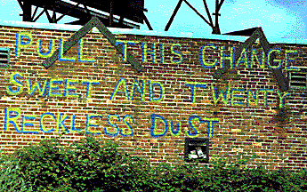
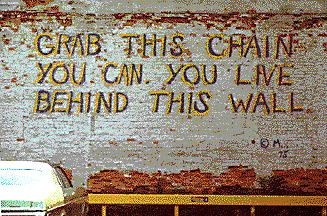
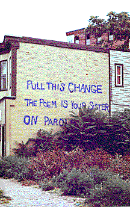
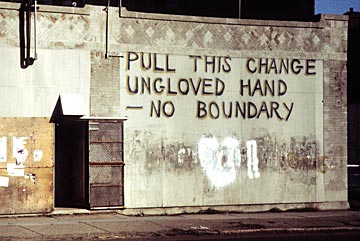
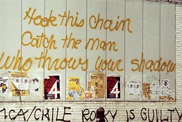

2026-11-18
Cambridge Wall Poem

Pull This Change / Sweet And Twenty / Reckless Dust
Vinnie's Luncheonette, Kendall Square MBTA Station

Grab This Chain / You Can. You Live / Behind This Wall
Deuce of Clubs Bar, Main Street

Pull This Change / The Poem Is Your Sister / On Parole
Women's Health Collective, Hampshire St

Pull This Chain / Ungloved Hand / -- No Boundary
Osborne Street Garage, Massachusetts Avenue

Hook This Chain / Catch The Man / Who Throws Your Shadow
Baskin Robbins Ice Cream Store, Norfolk St
This poem, by Mark Mendel, titled "Ojos Numerosos (for George Oppen)" was painted on various walls in Cambridge, MA in the summer of 1975. It was wonderful to come upon these poem fragments as you drove through the city. There were 23 verses: these are the ones I photographed.
Seventeen stanzas from the poem were printed in the Boston Real Paper in December 18, 1980, in an article titled "Blueprints for the Poetry of the Future."
I found  an article by Mendel with photos in Visible Langauge, the Journal of Typographical Research, volume IX, number 3, Summer 1975:
an article by Mendel with photos in Visible Langauge, the Journal of Typographical Research, volume IX, number 3, Summer 1975:
Line Transmitter Installation - A Poem in the Environment
Author(s): Mendel, Mark
Abstract: Ojos Numerosos is a poem of twenty-three three-line stanzas.
It was written to be painted on the sides of buildings, on viaducts, and on other urban surfaces where graffiti is typically found.
The verses are in random series and are interchangeable within the poem.
They form a chain in the experience of the person moving about town.
People confront this poem as they do graffiti or corporate-graffiti/advertising every day.
Poetry predates writing and printing. The recent tradition of poetics as a possession of the educated elite grew from its confinement to the printed page;
I want this poem to fit the viaduct as the sonnet was once felt to fit the page.
This is the sprayed word--the continuous simultaneous transmission of a poem into the environment.
Mark Mendel died in January 2026.
Here are the 17 verses from the Real Paper:
Updated 12/02/97, 04/19/05, 12/26/08, 05/06/22